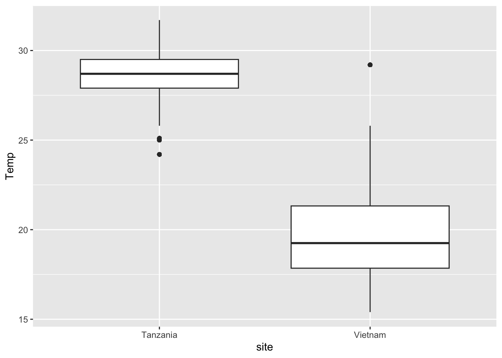
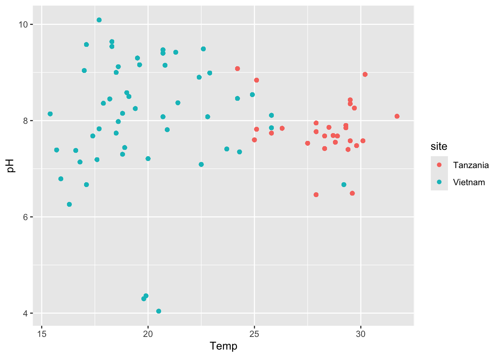
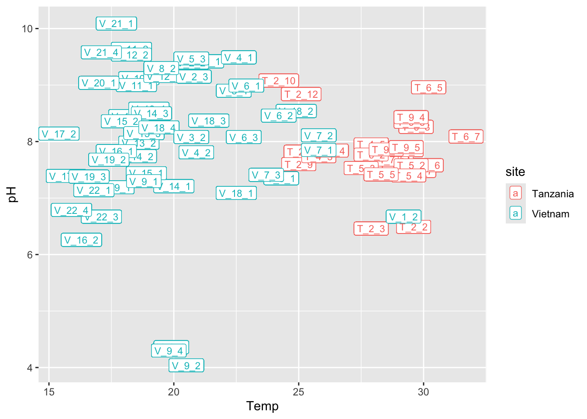
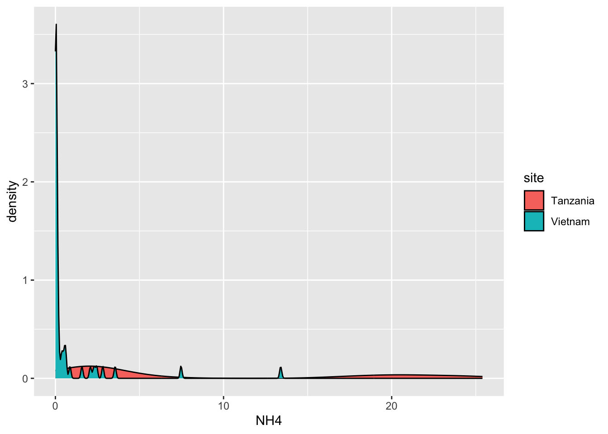
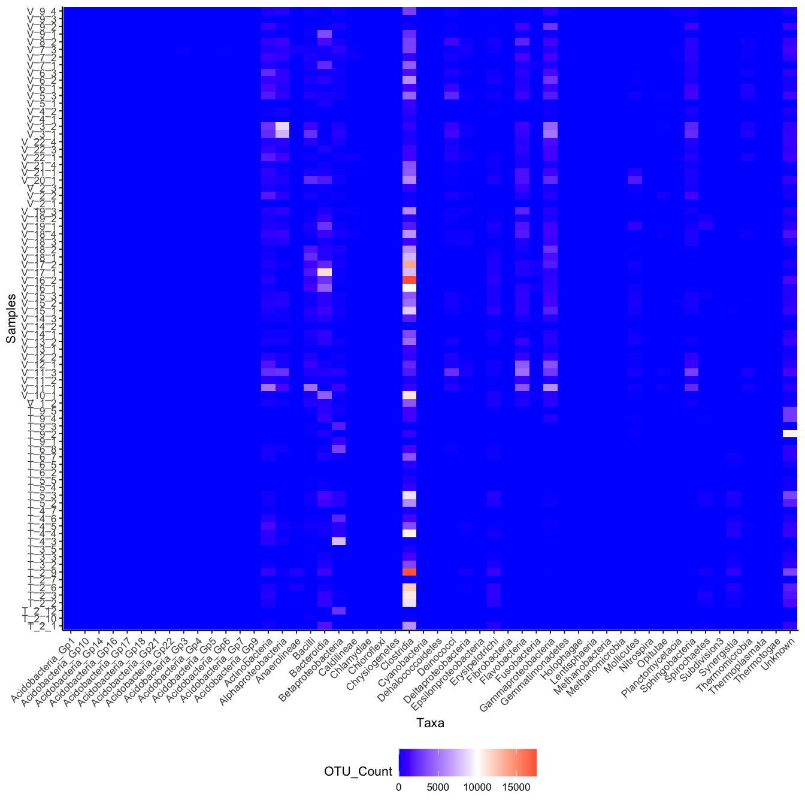

Lab 3: Data Visualisation II
Package(s)
Schedule
- 08.00 - 08.45: Recap of Lab 2 and Lecture
- 08.45 - 09.00: Break
- 09.00 - 12.00: Exercises
Learning Materials
Please prepare the following materials
Learning Objectives
A student who has met the objectives of the session will be able to:
- Use more advanced ggplot features
- Customise the data visualisation
- Combine multiple plots into one pane
- Look at a more advanced ggplot and decipher the components used
Exercises
Read the steps of this exercises carefully, while completing them
Introduction
Some authors are kind enough to supply the data they used for their paper, e.g.:
Where the supporting data can be found here:
Getting Started
Again, go to the R for Bio Data Science RStudio Cloud Server session from last time and login and choose the project you created
- Create a new Quarto Document for todays exercises, e.g. lab03_exercises.qmd
- NB! The Quarto document MUST be placed together with your
.Rprojfile (defining, the project root - look in yourFiles-tab) and also there, thedata-folder should be placed! - REMEMBER paths are important! Also, R is case-sensitive, i.e. “data” is not the same as “Data”
Getting the data
Add a new code chunk and add the following code (Never mind the details, we will get back to this), remember you can use headers to nicely section your quarto Document.
base_url <- "http://userweb.eng.gla.ac.uk/umer.ijaz/bioinformatics/ecological/"
SPE <- read_csv(file = str_c(base_url, "SPE_pitlatrine.csv"))
write_csv(x = SPE, file = "data/SPE_pitlatrine.csv")
ENV <- read_csv(file = str_c(base_url, "ENV_pitlatrine.csv"))
write_csv(x = ENV, file = "data/ENV_pitlatrine.csv")Add the chunk settings #| echo: true and #| eval: true, then run the block and change the latter to #| eval: false.
- Discuss in your group, what this means and why we do it
Click here for hint
From where do we retrieve the data and to where do we write it and what happens if we run the chunk more than one time?Wrangling the data
- What is data wrangling?
Before we continue with plotting, we want to unify the data, so here again you will run some code, where the details are not important right now.
But… Make sure, that you have run library("tidyverse") somewhere in your Quarto document - Perhaps under an initial header saying “Load Libraries” or similar?
SPE |>
pivot_longer(cols = -Taxa,
names_to = "Samples",
values_to = "OTU_Count") |>
full_join(ENV, by = "Samples") |>
mutate(site = case_when(str_detect(Samples, "^T") ~ "Tanzania",
str_detect(Samples, "^V") ~ "Vietnam")) |>
write_tsv(file = "data/SPE_ENV.tsv")Change the chunk settings as before
Data Visualisation II
Read the data
SPE_ENV <- read_tsv(file = "data/SPE_ENV.tsv")
SPE_ENV# A tibble: 4,212 × 15
Taxa Samples OTU_Count pH Temp TS VS VFA CODt CODs perCODsbyt
<chr> <chr> <dbl> <dbl> <dbl> <dbl> <dbl> <dbl> <dbl> <dbl> <dbl>
1 Acido… T_2_1 0 7.82 25.1 14.5 71.3 71 874 311 36
2 Acido… T_2_10 0 9.08 24.2 37.8 31.5 2 102 9 9
3 Acido… T_2_12 0 8.84 25.1 71.1 5.94 1 35 4 10
4 Acido… T_2_2 0 6.49 29.6 13.9 64.9 3.7 389 180 46
5 Acido… T_2_3 0 6.46 27.9 29.4 26.8 27.5 161 35 22
6 Acido… T_2_6 0 7.69 28.7 65.5 7.03 1.5 57 3 6
7 Acido… T_2_7 0 7.48 29.8 36.0 34.1 1.1 107 9 8
8 Acido… T_2_9 0 7.6 25 46.9 19.6 1.1 62 8 13
9 Acido… T_3_2 0 7.55 28.8 12.6 51.8 30.9 384 57 15
10 Acido… T_3_3 0 7.68 28.9 14.6 48.1 24.2 372 57 15
# ℹ 4,202 more rows
# ℹ 4 more variables: NH4 <dbl>, Prot <dbl>, Carbo <dbl>, site <chr>IMPORTANT INSTRUCTIONS - READ!
For these exercises, you will have to identify what you see in the plot!
For each plot, complete the following steps
- Look at this overview of the components of a ggplot (see below)
- Look at the plot you are to recreate and discuss in the group:
- What is the data? Take a look at it and understand what is in the data
- What are the mappings? I.e. what variables are on the x-/y-axis?
- Are there any colour-/fill-mappings?
- What are the geoms used?
- Are there any modifications to theme?
Click here for hint
- Consult the Data visualization with ggplot2 cheatsheet
- Check which options you have available
- Consult the chapters in the book you read, see preparation materials for labs 2 and 3

TASKS
Task 1 - Recreate the following plot
Discuss in your group, which ggplot elements can you identify?

Task 2 - Recreate the following plot
Discuss in your group, which ggplot elements can you identify?

Task 3 - Recreate the following plot
Discuss in your group, which ggplot elements can you identify?
Task 4 - Recreate the following plot
Discuss in your group, which ggplot elements can you identify?

Task 5 - Recreate the following plots
Discuss in your group, which ggplot elements can you identify?


Click here for hint
Same data, but a transformation happened, changing the representation of the data. Look carefully at the axes.Task 6 - Recreate the following plot
Discuss in your group, which ggplot elements can you identify?

Click here for hint
See if you can find something online ongeom_smooth()
Task 7 - Recreate the following plot
Discuss in your group, which ggplot elements can you identify?
Click here for hint
Think aboutfill and then see if you can find something online on geom_tile(), scale_fill_gradient2 and how to ggplot rotate axis labels
Task 8 - Recreate the following plot
Start by running this code in a new chunk (ignore details for now)
targets <- c("Methanobacteria", "Clostridia", "Actinobacteria",
"Sphingobacteria", "Anaerolineae")
SPE_ENV_targets <- SPE_ENV |>
filter(Taxa %in% targets)and then use the created dataset SPE_ENV_targets to recreate this plot:
Discuss in your group, which ggplot elements can you identify?

Click here for hint
Here we need to usegeom_density_ridges(), but which package contains this? Also we are using a colour scale called viridis, but how do we add this? Also, perhaps there are more themes we can use than just theme_classic()?
Task 9 - GROUP ASSIGNMENT
For this assignment you and your group are to apply what you have learned in the two data visualisation labs. The task is to create a really nice plot using one of two datasets, the cancer_data or the SPE_ENV
Try to play around with some custom colouring. There is a nice tool to aid in choosing colours for visualisations here
Be sure to read the assignment instructions before submitting your solution.